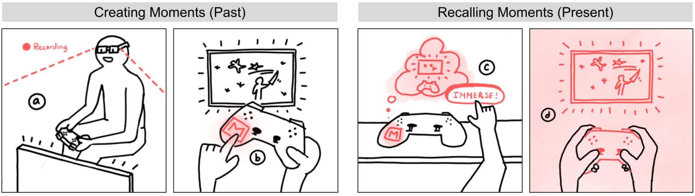

Abstract
The increasing prevalence of Extended Reality (XR) and head-mounted displays (HMDs), alongside rapid advancements in 3D reality capture technology, unlocks a new paradigm for capturing and reliving past memories/experiences through XR. Current methods for accessing and interacting with these “XR Memories” still lack the ability to fully leverage the range of capabilities afforded by XR and HMDs. We introduce TangibleMoments, a novel framework that enables users to embed XR memories onto physical objects, transforming those objects into “Moments”—tangible user interfaces for accessing and interacting with XR memories. We describe and illustrate five interaction methods as part of this framework: Creating Moments, Recalling Moments, Sharing Moments, Copying Moments, and Clearing Moments. We showcase an initial prototype and discuss possible extensions.